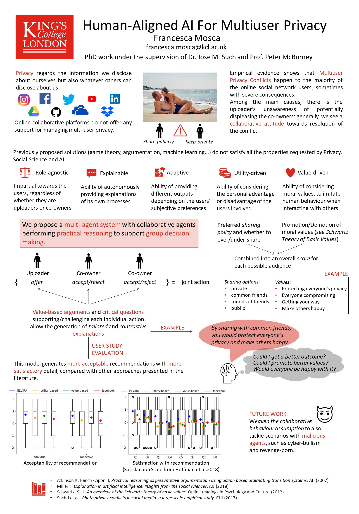

My research is inspired by the belief that AI can assist humans to tackle real-world problems.
As an example, let's consider multi-user privacy, which is the main topic of my PhD. Users of online services, such as IoT and social networks, often suffer from privacy violations caused by other people sharing information about them. This type of privacy violations, whose spreading and consequences are often underestimated, could be prevented and/or mitigated with the help of AI.
I would like, as an AI researcher, to keep developing similar impactful applications that tangibly improve people's everyday experiences, whether with the aim to enhance individual/business productivity or to solve global challenges.
By developing AI applications for Privacy, I aim to help users protect their personal data and avoid its inadvertent disclosure, in particular regarding co-owned data. This is much needed, given the lack of support offered by current platforms and regulations.
An example of human-assisting AI application regards the resolution of group conflicts. When people have different preferences and priorities, it may be easier for an autonomous system than for humans to identify an optimal solution. Hence, I focus on designing, modelling, implementing, and evaluating moral-driven decision making agents for solving group conflicts.
In order for AI to successfully interact with and assist humans, it needs to be understood and trusted by humans. Therefore, I aim to design AI models and frameworks which are fair and explainable.
During my PhD, I have been working on the design of a human-aligned and explainable multi-agent system that would support users of online collaborative platforms when managing collective privacy. When users have different preferences regarding the online sharing of co-owned content, e.g. a picture depicting multiple people, conflicts arise. Hence, I have designed and modelled explainable and morally-aligned autonomous agents for solving this type of conflicts. According to the software simulations and user studies that I have conducted, these agents would offer a better support for social networks users compared to the approaches currently available in the related literature or in real-world platforms like Facebook.
